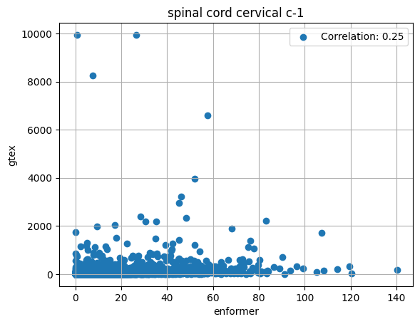

import pandas as pd
import matplotlib.pyplot as plt
brain_tissues = ["amygdala", "anterior_cingulate_cortex_ba24", "caudate_basal_ganglia", "cerebellar_hemisphere", "cerebellum", "cortex", "frontal_cortex_ba9", "hippocampus", "hypothalamus", "nucleus_accumbens_basal_ganglia", "putamen_basal_ganglia", "spinal_cord_cervical_c-1", "substantia_nigra"]
df = pd.read_csv("/home/s1mi/enformer_rat_data/output/hg38_predicted_expression.csv", index_col=0)
for tissue in brain_tissues:
tpm = pd.read_csv(f"https://storage.googleapis.com/gtex_analysis_v8/rna_seq_data/gene_tpm/gene_tpm_2017-06-05_v8_brain_{tissue}.gct.gz", header=2, sep="\t")
tpm['Name'] = tpm['Name'].apply(lambda gene: gene.split('.')[0])
# some genes are repeated (different ensembl version), remove second occurrence
tpm = tpm[~tpm.duplicated(subset=['Name'], keep='first')]
tpm.set_index('Name', inplace=True)
# Calculate average gene expression
mean_tpm = tpm.drop(columns=['id', 'Description']).mean(axis=1)
mean_tpm.name = tissue.replace("_", " ")
df = df.merge(mean_tpm, left_index = True, right_index = True, how = "inner")df.to_csv("/home/s1mi/enformer_rat_data/output/hg38_predicted_vs_observed_expression_all_GTEx_brain_tissues.csv")corr_df = df.corr()
corr_df| enformer | amygdala | anterior cingulate cortex ba24 | caudate basal ganglia | cerebellar hemisphere | cerebellum | cortex | frontal cortex ba9 | hippocampus | hypothalamus | nucleus accumbens basal ganglia | putamen basal ganglia | spinal cord cervical c-1 | substantia nigra | |
|---|---|---|---|---|---|---|---|---|---|---|---|---|---|---|
| enformer | 1.000000 | 0.467619 | 0.537760 | 0.475759 | 0.525852 | 0.523848 | 0.539825 | 0.557909 | 0.472233 | 0.410200 | 0.487022 | 0.463762 | 0.246135 | 0.380836 |
| amygdala | 0.467619 | 1.000000 | 0.954906 | 0.932110 | 0.699623 | 0.720513 | 0.908948 | 0.896015 | 0.967708 | 0.802080 | 0.935692 | 0.934127 | 0.713773 | 0.896603 |
| anterior cingulate cortex ba24 | 0.537760 | 0.954906 | 1.000000 | 0.918404 | 0.766384 | 0.779114 | 0.975494 | 0.978834 | 0.919471 | 0.763097 | 0.929791 | 0.905958 | 0.570054 | 0.783233 |
| caudate basal ganglia | 0.475759 | 0.932110 | 0.918404 | 1.000000 | 0.683751 | 0.714650 | 0.900610 | 0.880568 | 0.900796 | 0.752087 | 0.977106 | 0.989579 | 0.616714 | 0.820553 |
| cerebellar hemisphere | 0.525852 | 0.699623 | 0.766384 | 0.683751 | 1.000000 | 0.977913 | 0.759456 | 0.783059 | 0.698800 | 0.609139 | 0.725290 | 0.664395 | 0.386328 | 0.581458 |
| cerebellum | 0.523848 | 0.720513 | 0.779114 | 0.714650 | 0.977913 | 1.000000 | 0.789908 | 0.782710 | 0.717366 | 0.626874 | 0.749312 | 0.697112 | 0.410336 | 0.611442 |
| cortex | 0.539825 | 0.908948 | 0.975494 | 0.900610 | 0.759456 | 0.789908 | 1.000000 | 0.981027 | 0.887993 | 0.730072 | 0.895736 | 0.893500 | 0.538779 | 0.742445 |
| frontal cortex ba9 | 0.557909 | 0.896015 | 0.978834 | 0.880568 | 0.783059 | 0.782710 | 0.981027 | 1.000000 | 0.877334 | 0.722115 | 0.884639 | 0.870592 | 0.514861 | 0.719960 |
| hippocampus | 0.472233 | 0.967708 | 0.919471 | 0.900796 | 0.698800 | 0.717366 | 0.887993 | 0.877334 | 1.000000 | 0.814058 | 0.899047 | 0.915272 | 0.812031 | 0.934632 |
| hypothalamus | 0.410200 | 0.802080 | 0.763097 | 0.752087 | 0.609139 | 0.626874 | 0.730072 | 0.722115 | 0.814058 | 1.000000 | 0.763480 | 0.745192 | 0.681446 | 0.806814 |
| nucleus accumbens basal ganglia | 0.487022 | 0.935692 | 0.929791 | 0.977106 | 0.725290 | 0.749312 | 0.895736 | 0.884639 | 0.899047 | 0.763480 | 1.000000 | 0.962463 | 0.588651 | 0.808008 |
| putamen basal ganglia | 0.463762 | 0.934127 | 0.905958 | 0.989579 | 0.664395 | 0.697112 | 0.893500 | 0.870592 | 0.915272 | 0.745192 | 0.962463 | 1.000000 | 0.655825 | 0.844448 |
| spinal cord cervical c-1 | 0.246135 | 0.713773 | 0.570054 | 0.616714 | 0.386328 | 0.410336 | 0.538779 | 0.514861 | 0.812031 | 0.681446 | 0.588651 | 0.655825 | 1.000000 | 0.916613 |
| substantia nigra | 0.380836 | 0.896603 | 0.783233 | 0.820553 | 0.581458 | 0.611442 | 0.742445 | 0.719960 | 0.934632 | 0.806814 | 0.808008 | 0.844448 | 0.916613 | 1.000000 |
def plot_predicted_vs_observed(tissue):
corr = corr_df.loc[tissue, "enformer"]
plt.scatter(df['enformer'], df[tissue], label=f'Correlation: {corr:.2f}')
plt.xlabel('enformer')
plt.ylabel('gtex')
plt.title(tissue.replace("_", " "))
plt.legend()
plt.grid(True)
plt.show()for tissue in brain_tissues:
plot_predicted_vs_observed(tissue.replace("_", " "))
